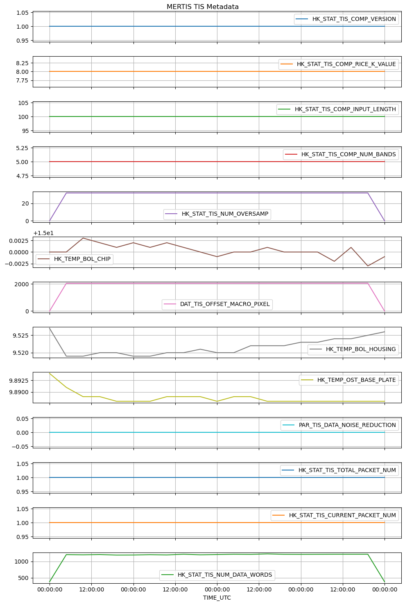
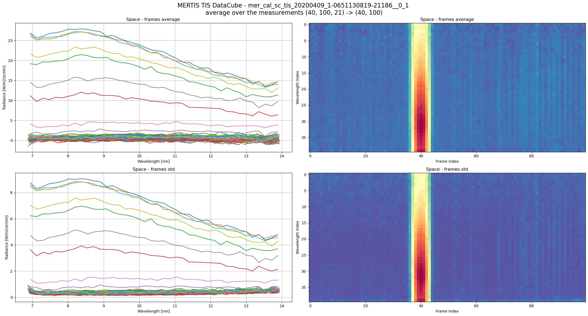
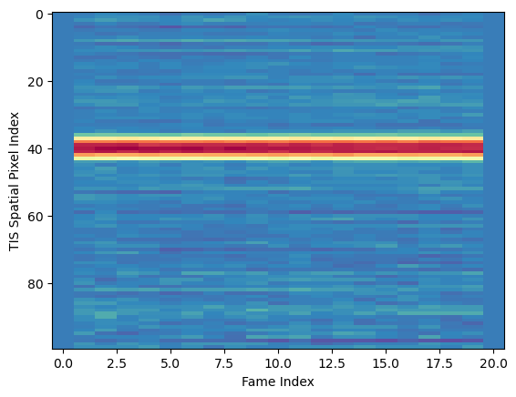
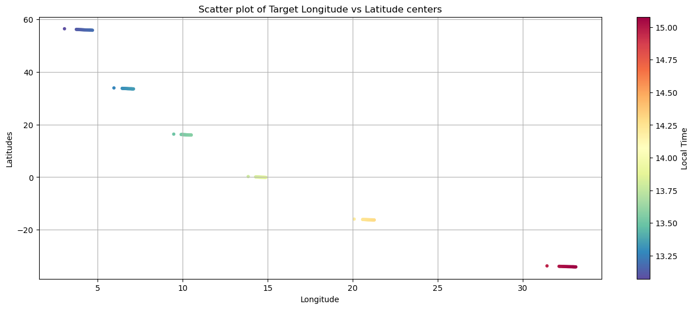
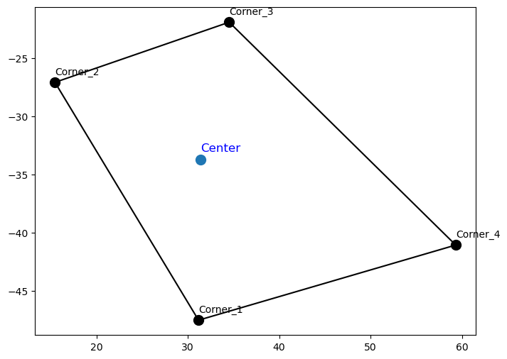

import pathlib
import rich
import mertisreader as mr
print("Libraries imported successfully.")Libraries imported successfully.Import Required Libraries
Libraries imported successfully.Initialize the MERTISSessionReader with the input directory and optional parameters for output directory and log level.
The ../data/ contains a subset of the Moon flyby , technically called Earth Gravity Assist (EGA).
The directory name reflects ESA-PSA/PDS4 naminhc scheme and the start / stop data acquistion , plus the data pack creation.
Under this, there the different data levels :
| Level | Units | Geometry | Calibration Targets | TIS Aligned |
|---|---|---|---|---|
| raw | Digital Numbers | No | No | No |
| par | Physical Units | Yes | Yes | No |
| cal | Physical Units | Yes | No | Yes |
Just change the level directory, the package can handle all the levels and read the data, take care of not calling geometry related paramter on RAW.
input_path = pathlib.Path('../data/bcmer_tm_all_START-20200409T000000_END-20200410T000000_CRE-20240717T132010-ParamEventBootSciHK-short/cal')
output_path = pathlib.Path('/tmp/')
log_level = 'INFO'
if not input_path.exists():
print(f"Input path {input_path} does not exist.")
else:
print(f"Reading path {input_path}")
ms_reader = mr.MERTISDataPackReader(input_dir=input_path, output_dir=output_path, log_level=log_level)
print(f'MERTISDataPackReader initialized with input directory: {ms_reader.input_dir}')
print(f'Output directory: {ms_reader.output_dir}')
print(f'Log level: {ms_reader.log_level}')2025-10-02 16:44:54,927|452487|INFO|input_dir=PosixPath('../data/bcmer_tm_all_START-20200409T000000_END-20200410T000000_CRE-20240717T132010-ParamEventBootSciHK-short/cal')Reading path ../data/bcmer_tm_all_START-20200409T000000_END-20200410T000000_CRE-20240717T132010-ParamEventBootSciHK-short/cal
MERTISDataPackReader initialized with input directory: ../data/bcmer_tm_all_START-20200409T000000_END-20200410T000000_CRE-20240717T132010-ParamEventBootSciHK-short/cal
Output directory: /tmp
Log level: INFOShow Files in Input Directory
All files in input_dir :Counter({'.dat': 2, '.lblx': 3, '.fits': 1})
All files in input_dir matching old pattern <v0.2.6 (\d{8}_\d{8}):Counter()
All files in input_dir matching new pattern >=v0.2.6 (mer_cal_sc_tis_YYYYMMDD_1-...):Counter({'mer_cal_sc_tis': 1})
List File Types
{ 'hk_default': ['mer_cal_hk_default_20200409_1-0651130766-12538__0_1.dat'], 'hk_extended': ['mer_cal_hk_extended_20200409_1-0651130766-12595__0_1.dat'], 'sc_tis': ['mer_cal_sc_tis_20200409_1-0651130819-21186__0_1.fits'], 'sc_tir': [], 'sc_tis_ql': [], 'sc_tir_ql': [] }
{'hk_default': 1, 'hk_extended': 1, 'sc_tis': 1, 'sc_tir': 0, 'sc_tis_ql': 0, 'sc_tir_ql': 0}
Collect Data
Reading filetype: hk_default from mer_cal_hk_default_20200409_1-0651130766-12538__0_1
Reading filetype: hk_extended from mer_cal_hk_extended_20200409_1-0651130766-12595__0_1
Reading filetype: tis from mer_cal_sc_tis_20200409_1-0651130819-21186__0_1
Collected data keys: dict_keys(['hk_default', 'hk_extended', 'tis'])
hk_default: 1 files collected
hk_extended: 1 files collected
tis: 1 files collectedAssemble Data
Reading filetype: tis from ../data/bcmer_tm_all_START-20200409T000000_END-20200410T000000_CRE-20240717T132010-ParamEventBootSciHK-short/cal/me r_cal_sc_tis_20200409_1-0651130819-21186__0_1.fits
n_wav=40 # generic wavelengths : not precise enough for scientific analysis!
| | tis_stem | finite(geo) | geo.size |
|---:|:------------------------------------------------|--------------:|-----------:|
| 0 | mer_cal_sc_tis_20200409_1-0651130819-21186__0_1 | 672 | 10500 |
Indices of measurements targets (HK_STAT_TIS_DATA_ACQ_TARGET):
space_index_merged.shape=(21,)
bb7_index_merged.shape=(0,)
bb3_index_merged.shape=(0,)
planet_index_merged.shape=(0,)
Collected data statistics:
Number of TIS files: 1
Number of HK files: 2
Number of TIR files: 0
Number of TIS QL files: 0
Number of TIR QL files: 0Verify the Assembled Data
# RAW does not have geometry data
if ms_reader.processing_level != 'RAW':
print(f'Geometry data keys: {ms_reader.geom_ls.keys()}')
print(f'Frames data keys: {ms_reader.frames.keys()}')
print(f'Wavelengths data keys: {ms_reader.wavelengths.keys()}')
print(f'MERTIS TIS metadata keys: {ms_reader.mertis_tis_metadata.keys()}')
print(f'Space index merged shape: {ms_reader.space_index_merged.shape}')
print(f'BB7 index merged shape: {ms_reader.bb7_index_merged.shape}')
print(f'BB3 index merged shape: {ms_reader.bb3_index_merged.shape}')
print(f'Planet index merged shape: {ms_reader.planet_index_merged.shape}')Geometry data keys: dict_keys(['mer_cal_sc_tis_20200409_1-0651130819-21186__0_1'])
Frames data keys: dict_keys(['mer_cal_sc_tis_20200409_1-0651130819-21186__0_1'])
Wavelengths data keys: dict_keys(['mer_cal_sc_tis_20200409_1-0651130819-21186__0_1'])
MERTIS TIS metadata keys: dict_keys(['mer_cal_sc_tis_20200409_1-0651130819-21186__0_1'])
Space index merged shape: (21,)
BB7 index merged shape: (0,)
BB3 index merged shape: (0,)
Planet index merged shape: (0,)A data directory can contains more file for each type, those are collected in a dict for each ms_reader variable , so it is handy to define which file we want to work with after inspection, like the following :
now, let’s see some (meta)data:
| 0 | 1 | 2 | 3 | |
|---|---|---|---|---|
| TIME_UTC | 2020-04-09T05:40:20.710Z | 2020-04-09T05:40:31.748Z | 2020-04-09T05:40:32.548Z | 2020-04-09T05:40:33.348Z |
| TIME_OBT | 1/0651130819:21186 | 1/0651130830:23689 | 1/0651130831:10567 | 1/0651130831:62998 |
| TimeStamp | 651130823.044403 | 651130830.950928 | 651130831.746674 | 651130832.544235 |
| HK_STAT_TIS_DATA_ACQ_ID | 3740 | 3743 | 3744 | 3745 |
| HK_STAT_TIS_DATA_ACQ_TYPE | Sci_Raw | Sci_Subtracted_BB3 | Sci_Subtracted_BB3 | Sci_Subtracted_BB3 |
| HK_STAT_TIS_DATA_ACQ_TARGET | Space | Space | Space | Space |
| HK_STAT_BOL_BIAS_VOLT_ACTIVE_PARAM_SET | 2 | 2 | 2 | 2 |
| HK_STAT_TIS_DATA_ACQ_TIME | 651130819.323273 | 651130830.361465 | 651130831.16124 | 651130831.961273 |
| PAR_TIS_BIN_MODE | 1x2 | 1x2 | 1x2 | 1x2 |
| PAR_TIS_WIN_SIZE | 100x80pixel | 100x80pixel | 100x80pixel | 100x80pixel |
| PAR_TIS_COMP_MODE | lossless | lossless | lossless | lossless |
| HK_STAT_TIS_COMP_VERSION | 1 | 1 | 1 | 1 |
| HK_STAT_TIS_COMP_RICE_K_VALUE | 8 | 8 | 8 | 8 |
| HK_STAT_TIS_COMP_INPUT_LENGTH | 100 | 100 | 100 | 100 |
| HK_STAT_TIS_COMP_NUM_BANDS | 5 | 5 | 5 | 5 |
| HK_STAT_TIS_NUM_OVERSAMP | 0 | 32 | 32 | 32 |
| HK_TEMP_BOL_CHIP | 15.0 | 15.0 | 15.003 | 15.002 |
| DAT_TIS_OFFSET_MACRO_PIXEL | 1 | 2052 | 2052 | 2053 |
| HK_TEMP_BOL_HOUSING | 9.527 | 9.519 | 9.519 | 9.52 |
| HK_TEMP_OST_BASE_PLATE | 9.894 | 9.891 | 9.889 | 9.889 |
| PAR_TIS_DATA_NOISE_REDUCTION | 0 | 0 | 0 | 0 |
| HK_STAT_TIS_TOTAL_PACKET_NUM | 1 | 1 | 1 | 1 |
| HK_STAT_TIS_CURRENT_PACKET_NUM | 1 | 1 | 1 | 1 |
| HK_STAT_TIS_NUM_DATA_WORDS | 384 | 1206 | 1200 | 1208 |
from matplotlib import pyplot as plt
import matplotlib.dates as mdates
ax = ms_reader.mertis_tis_metadata[file_key]\
.set_index('TIME_UTC').loc[:,'HK_STAT_TIS_COMP_VERSION':]\
.plot(figsize=[10,15], legend=True, title='MERTIS TIS Metadata', grid=True, subplots=True);
ax[-1].xaxis.set_major_formatter(mdates.DateFormatter('%H:%M:%S'))
ax[-1].set_xlabel('TIME_UTC', fontsize=10)
plt.tight_layout()
plt.tight_layout()
Now some data from TIS detector, each one a 2D array.
For those data, dufing cruise, the scientific data are collected ueing the Space port and not Planet port.
TIS Datacube size is the union of several TIS 2D array measurement, each one typically (40, 100) = (n_spectral,n_spatial), depending on binning and windowing.
(40, 100, 21) = (n_spectral,n_spatial,n_frames)
n_spectral : number of spectral channels, depends on pixel spectral binning (1,2,4) result in n_spatial == (80,40,20)n_spatial : number of measurements spatial pixels, depends on pixel spatial binning (1,2,4) result in n_spatial == (100,50,25)n_frames : number of TIS frames, or measurements, this correspond to the time axis.full_frames_3D = ms_reader.frames[file_key]
wav = ms_reader.wavelengths[file_key]
plot_index = ms_reader.space_index[file_key]
print(f'plot_index: {plot_index}')
fig, ax = plt.subplots(ncols=2,nrows=2, figsize = [22,12])
fig.suptitle(f'MERTIS TIS DataCube - {file_key} \n'
f'average over the measurements {full_frames_3D.shape} -> {full_frames_3D[:,:,0].shape}',
fontsize=16)
title = 'Space'
ax[0][0].plot(wav,full_frames_3D[:,:,plot_index].mean(axis=2));
ax[0][0].set_title(f'{title} - frames average ')
ax[0][1].imshow(full_frames_3D[:,:,plot_index].mean(axis=2),aspect='auto',cmap=plt.cm.Spectral_r)
ax[0][1].set_title(f'{title} - frames average')
ax[1][0].set_title(f'{title} - frames std')
ax[1][0].plot(wav,full_frames_3D[:,:,plot_index].std(axis=2));
ax[1][1].set_title(f'{title} - frames std')
ax[1][1].imshow(full_frames_3D[:,:,plot_index].std(axis=2),aspect='auto',cmap=plt.cm.Spectral_r)
_ = [a.set_xlabel('Wavelength [nm]') for a in ax[:,0]]
_ = [a.set_ylabel('Radiance [W/m2/sr/nm]') for a in ax[:,0]]
_ = [a.grid(True) for a in ax[:,0]]
_ = [a.set_xlabel('Frame Index') for a in ax[:,1]]
_ = [a.set_ylabel('Wavelength Index') for a in ax[:,1]]
plt.tight_layout()plot_index: RangeIndex(start=0, stop=21, step=1)
Text(0, 0.5, 'TIS Spatial Pixel Index')
The higher level pixel near 40 are the “first light” MERTIS ever saw in space, from the Moon.
Now some geometry data , not available in RAW data.
dict_keys(['MERTIS_TIS_GEOMETRY_TARGET_LONGITUDE', 'MERTIS_TIS_GEOMETRY_TARGET_LATITUDE', 'MERTIS_TIS_GEOMETRY_SUBSPACECRAFT_LONGITUDE', 'MERTIS_TIS_GEOMETRY_SUBSPACECRAFT_LATITUDE', 'MERTIS_TIS_GEOMETRY_SUB_SUN_LONGITUDE', 'MERTIS_TIS_GEOMETRY_SUB_SUN_LATITUDE', 'MERTIS_TIS_GEOMETRY_TARGET_ALTITUDE', 'MERTIS_TIS_GEOMETRY_SUBSPACECRAFT_ALTITUDE', 'MERTIS_TIS_GEOMETRY_SUB_SUN_ALTITUDE', 'MERTIS_TIS_GEOMETRY_TARGET_DISTANCE', 'MERTIS_TIS_GEOMETRY_TARGET_ANGULAR_DIAMETER', 'MERTIS_TIS_GEOMETRY_LOCAL_TIME', 'MERTIS_TIS_GEOMETRY_TARGET_PHASE_ANGLE', 'MERTIS_TIS_GEOMETRY_TARGET_EMISSION_ANGLE', 'MERTIS_TIS_GEOMETRY_TARGET_INCIDENCE_ANGLE'])
The dimension for the geoemtry variables are (5, 100, 21) == (corners, n_spatial, n_frames) :
C2 C1
+-------+
| |
| C0 |
| |
+-------+
C3 C4n_spatial : number of measurements spatial pixels, depends on pixel spatial binning (1,2,4) result in n_spatial == (100,50,25)n_frames : number of TIS frames, or measurements, this correspond to the time axis in the TIS datacube.plt.figure(figsize=(16, 6))
longitudes = ms_reader.geom_ls[file_key]['MERTIS_TIS_GEOMETRY_TARGET_LONGITUDE']
longitudes_center = longitudes[0,:,:]
latitudes = ms_reader.geom_ls[file_key]['MERTIS_TIS_GEOMETRY_TARGET_LATITUDE']
latitudes_center = latitudes[0,:,:]
local_times = ms_reader.geom_ls[file_key]['MERTIS_TIS_GEOMETRY_LOCAL_TIME']
local_times_center = local_times[0,:,:]
sc = plt.scatter(longitudes_center.flatten(), latitudes_center.flatten(), c=local_times_center.flatten(), s=10, cmap='Spectral_r')
plt.xlabel('Longitude')
cbar = plt.colorbar(sc)
cbar.set_label('Local Time')
plt.ylabel('Latitudes')
plt.title('Scatter plot of Target Longitude vs Latitude centers')
plt.grid(True)
plt.show()
Let’s find some TIS sptail pixels with defined geometries on all corners
105
[[38 0]
[38 1]
[38 2]
[38 3]
[38 4]]plt.figure(figsize=(8, 6))
pixel_index = indices[0] # Take the first valid pixel for demonstration
# Plot the corners of the polygon
plt.scatter(longitudes[1:,pixel_index[0],pixel_index[1] ], latitudes[1:,pixel_index[0],pixel_index[1] ], s=100, c='black')
# Extract the longitude and latitude for the corners (1:5), close the polygon by repeating the first corner
poly_lons = longitudes[1:, pixel_index[0], pixel_index[1]]
poly_lats = latitudes[1:, pixel_index[0], pixel_index[1]]
# Close the polygon
poly_lons = np.append(poly_lons, poly_lons[0])
poly_lats = np.append(poly_lats, poly_lats[0])
for i in range(1, 5):
plt.text(
poly_lons[i-1],
poly_lats[i-1]+0.5, # Offset the text slightly above the point
f'Corner_{i}',
fontsize=10,
color='black',
ha='left',
va='bottom'
)
# Plot the connecting lines
plt.plot(poly_lons, poly_lats, linestyle='-', color='black')
plt.scatter(longitudes[0,pixel_index[0],pixel_index[1] ], latitudes[0,pixel_index[0],pixel_index[1] ], s=100)
plt.text(
longitudes[0, pixel_index[0], pixel_index[1]],
latitudes[0, pixel_index[0], pixel_index[1]]+0.5, # Offset the text slightly above the point
'Center',
fontsize=12,
color='blue',
ha='left',
va='bottom'
)Text(31.43904149826383, -33.20697106068339, 'Center')